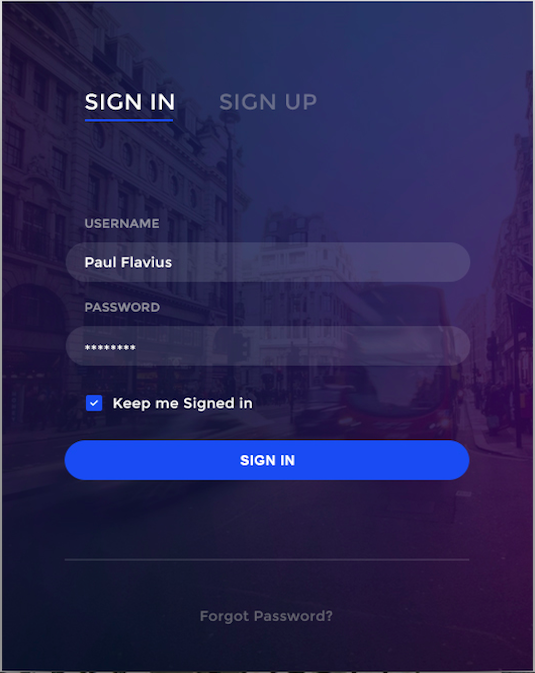
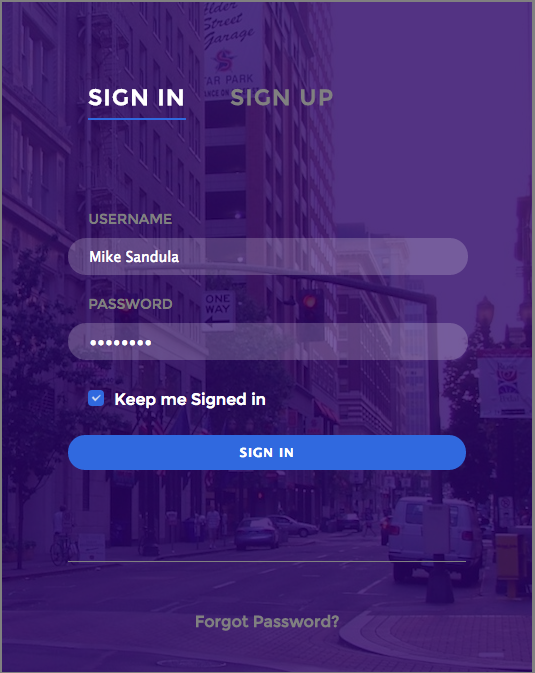

CSS Design Challenge
One great way to flex your front-end muscles is to do a design challenge. The idea is you look at a screenshot of a chunk of web design and then replicate it using HTML and CSS. A super popular website for doing this is '100 Days UI'.
I did Day No. 1. I've still got one more week of Grand Circus Bootcamp left to complete, so Day No. 2 may have to wait a little bit. But I definitely enjoyed this, so I'd like to continue doing it.
Anyway, here is my result:
 
Original design on the left; mine on the right. All told, it took me a little over an hour. Most noticeable difference is that I used a different background photo because I doubt I'd be able to find the one they used. I lucked out on finding the same font on Google Fonts. There are a couple other subtle differences as I wasn't able to produce a 100 percent exact replication, but I don't think getting a pixel-for-pixel match is the point of these challenges.
Definitely the biggest obstacle was the checkbox. Turns out, customizing the look of an HTML checkbox is a mammoth undertaking, which is unfortunate because the default look is atrocious. A Google search produced a few samples of custom checkboxes, but they all involved basically hacking the code as they ended up hiding the original checkbox, then 30 or so lines of CSS later, they had their new and improved checkbox.
So, I ended up going the easy route and just dropped in a plain white checkmark and tossed it in a blue box, as seen above. My finished product isn't toggleable as that would have required JavaScript and I wanted to keep this to just HTML and CSS (though I did use Stylus, because once you learn to preprocess your CSS, there's no going back).
The other thing I couldn't quite replicate was the password being masked with asterisks, rather than bullets, but I think that's simply a browser thing and Chrome uses bullets.
Most useful takeaway for me: Use rgba to set background-color transparancy, not opacity, that way the text won't be transparent, too (unless, of course, that's the effect you want).
Here's my code: github.com/msandula12/ui001.
P.S. — The former copy editor in me is annoyed that the original design has the word 'Signed' randomly capitalized. But I digress ...
Posted on: March 19, 2016
A plug for plug-ins
I'm only in Week 3 of my Front-End Developer Bootcamp, but I've already found the need to simplify my workflow. Plug-ins are a great way to do that. There are literally thousands of plug-ins and the ones you use will depend on the program(s) you use, as well as your personal preferences.
One such plug-in I really like is called Emmet. To download Emmet, go to emmet.io/download and select your text editor of choice (I use Sublime Text 2). Doing that will take you to a GitHub repository complete with step-by-step instructions particular to your text editor.
Once it's installed, start your stopwatch to keep track of how much time you save while coding HTML files. While Emmet doesn't reinvent the wheel, it certainly makes creating HTML files far less tedious. For example, you can create a div that has a unordered list, with three list items inside that, by typing the following, then pressing tab:
div>ul>li*3
If you think that's impressive, create an empty HTML file, type "!" then press tab (What does that do? Sorry, no spoilers). Again, by no means does Emmet reinvent the wheel, but it makes HTML file creation far quicker and easier so you can focus on the things that really matter. And while there are dozens of plug-ins and tools that are considerably more powerful, a few of which I've already glommed onto, I must admit it felt great to feel the need to simplify my workflow after only 10 days of bootcamp classes.
Happy coding!
Posted on: Feb. 17, 2016